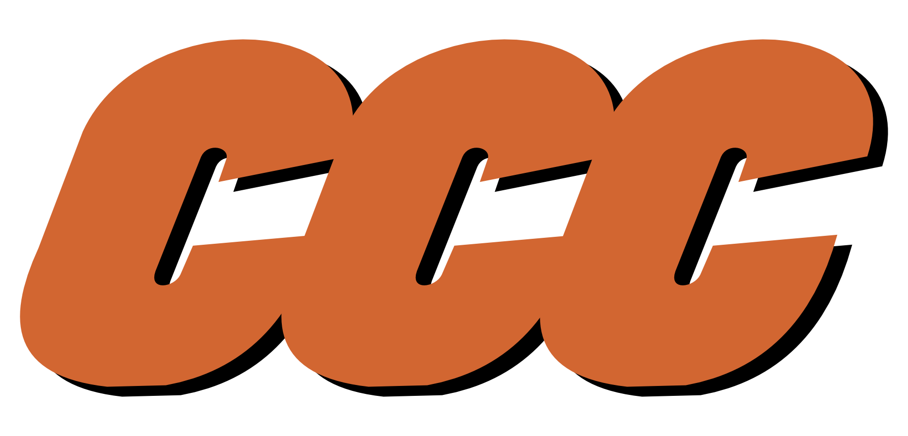
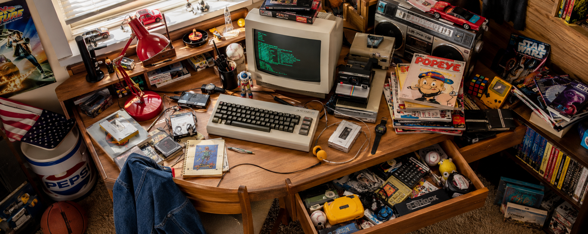
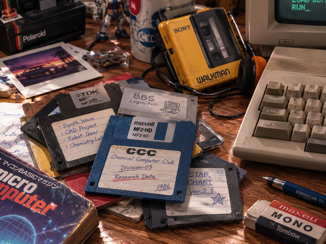

CCC-WEAR / 001
Club T-Shirt
Daily research uniform.
6600

RESEARCH CLUB / EST. 1986
Welcome to the club for all Nerds & Geeks.

01 / ABOUT
Chemical Computer Clubは、
1986年に設立された研究クラブです。
化学とコンピューターの力で、暮らしをより豊かにすることを目的に活動しています。
研究室だけでなく、自然の中で遊ぶこと、道具をつくること、機械に触れること、仲間と知識を共有することも、CCCの大切な活動です。
現在もクラブは活動を続けています。
Explore club equipment →
02 / PRODUCTS
03 / EVENT
04 / LINKS